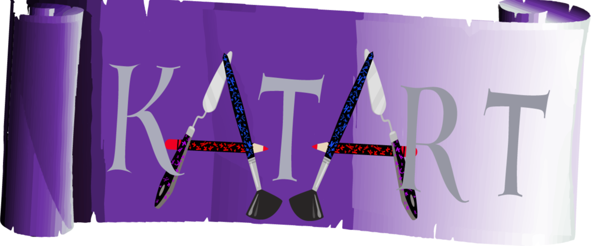
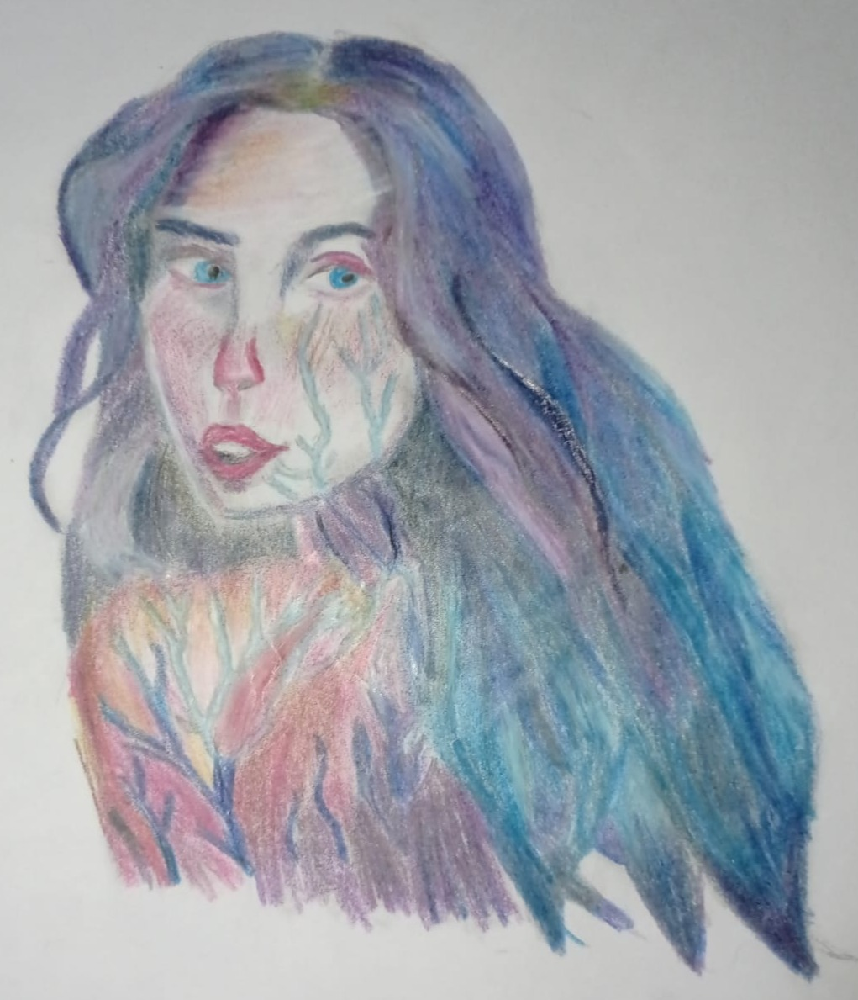
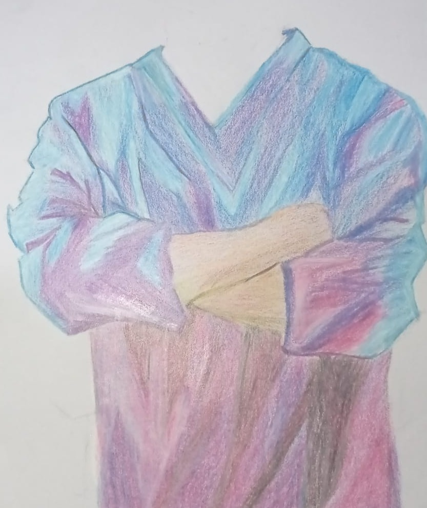
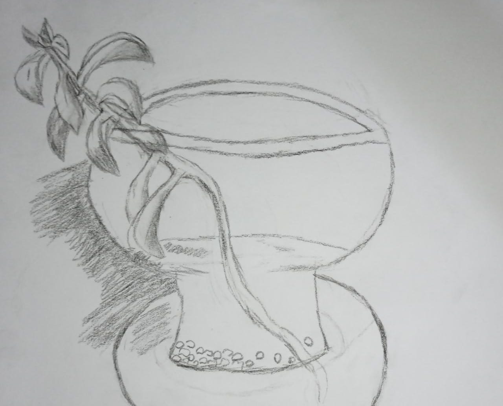
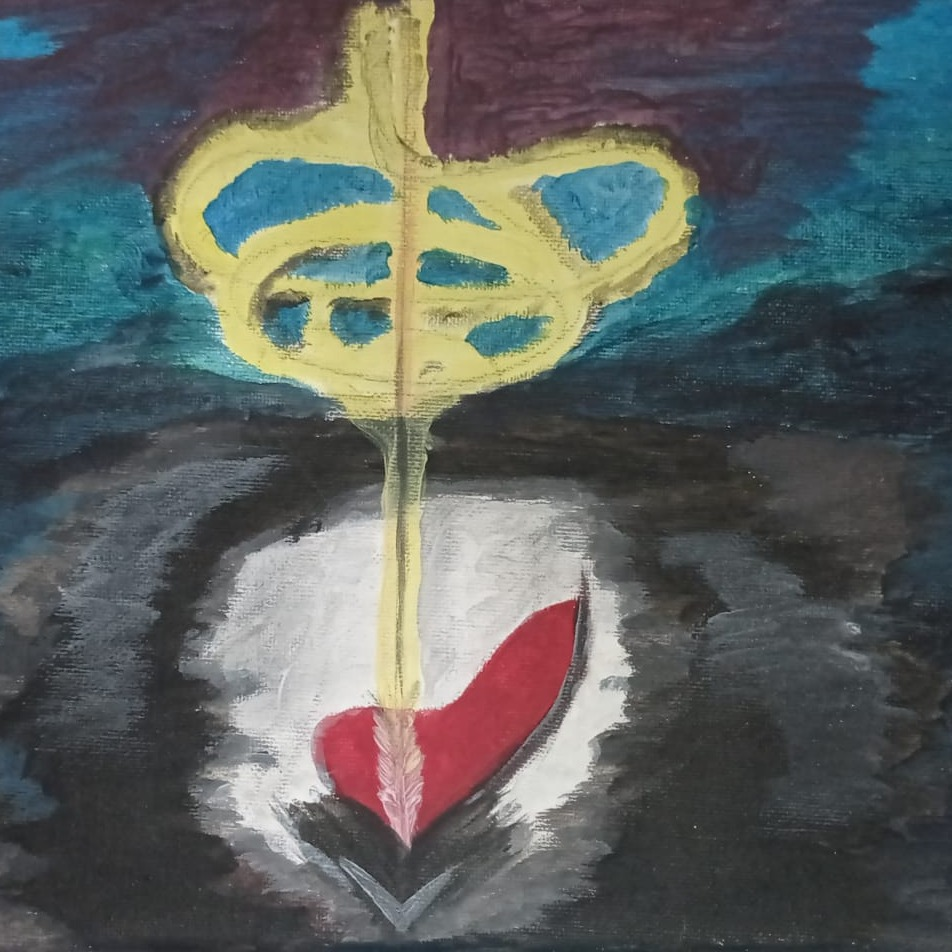
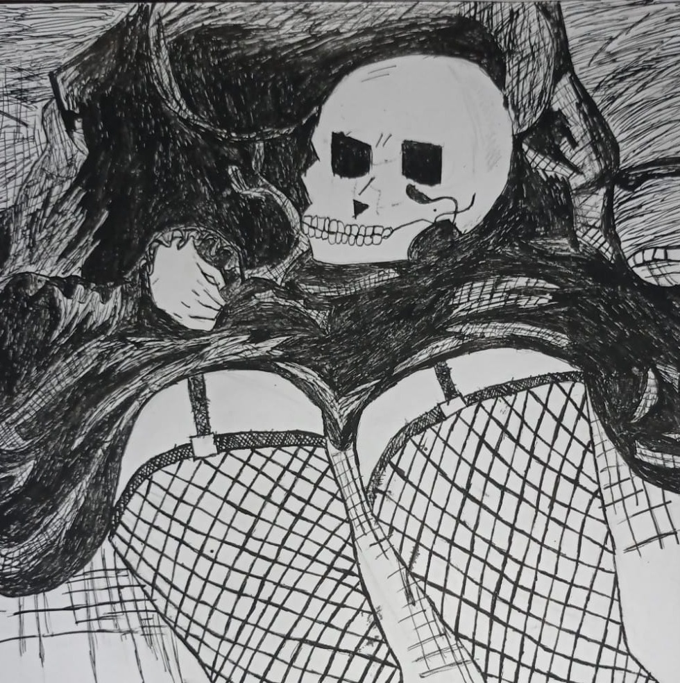
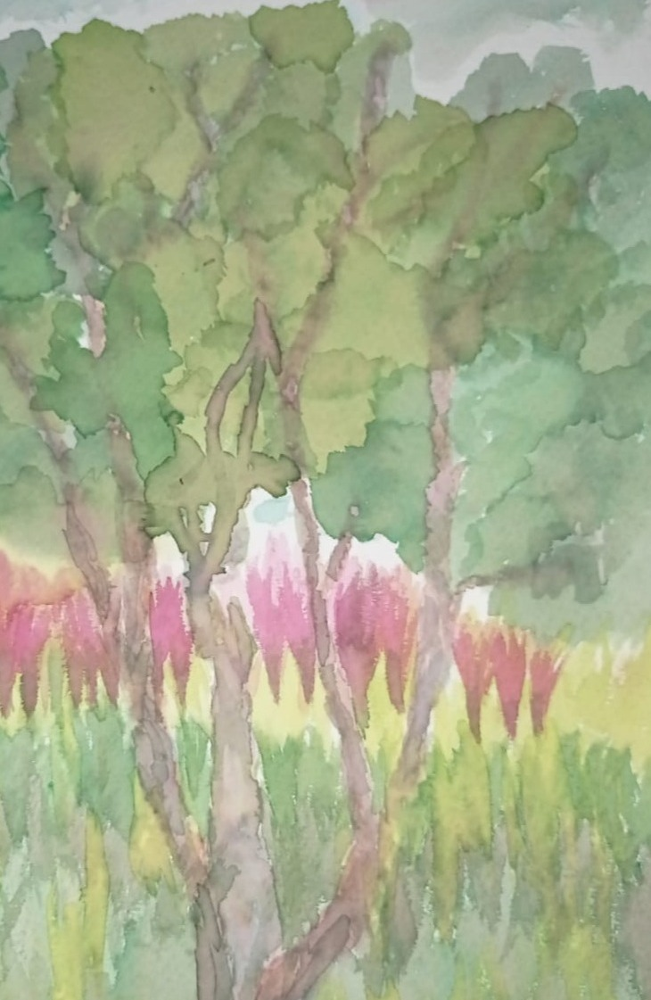

Katherinne
Obras
Técnicas secas
Técnicas Húmedas
Contactarme
Técnicas secas

VENAS
Grisalla compuesta por lápices de la línea b y colores.
foto hecha por kathernne Rendón.

PRUEBA DE COLOR
Dibujo hecho a base de tonalidades frías.
Lápices de colores sobre papel .
foto hecha por kathernne Rendón.

INICIO
Este dibujo se llevó a cabo, como su mismo nombre
lo dice, cuando estaba iniciando en el dibujo, tomé como
referencia una planta suculenta reposada en agua dentro de un
florero de vidrio.
Carboncillo sobre papel .
foto hecha por kathernne Rendón.
Técnicas Húmedas

PRESO
Pintura con técnica abstracta cuyo objetivo es
mostrar lo que sucede en la mente de un asesino según estudios
psicológicos.
Acrílico sobre lienzo.
foto hecha por kathernne Rendón.

EN PLENITUD
Obra hecha a base de tinta china.
Tinta china con plumilla sobre opalina.
foto hecha por kathernne Rendón.

CAMINO
Esta obra se llevó a cabo tomando como referencia
una zona del paisaje de parques del río, un reto que constó en
llegar a cada tonalidad con solo los tres colores primarios.
Acuarela líquida sobre papel acuarela.
foto hecha por kathernne Rendón.
Created with Mobirise
web page
software